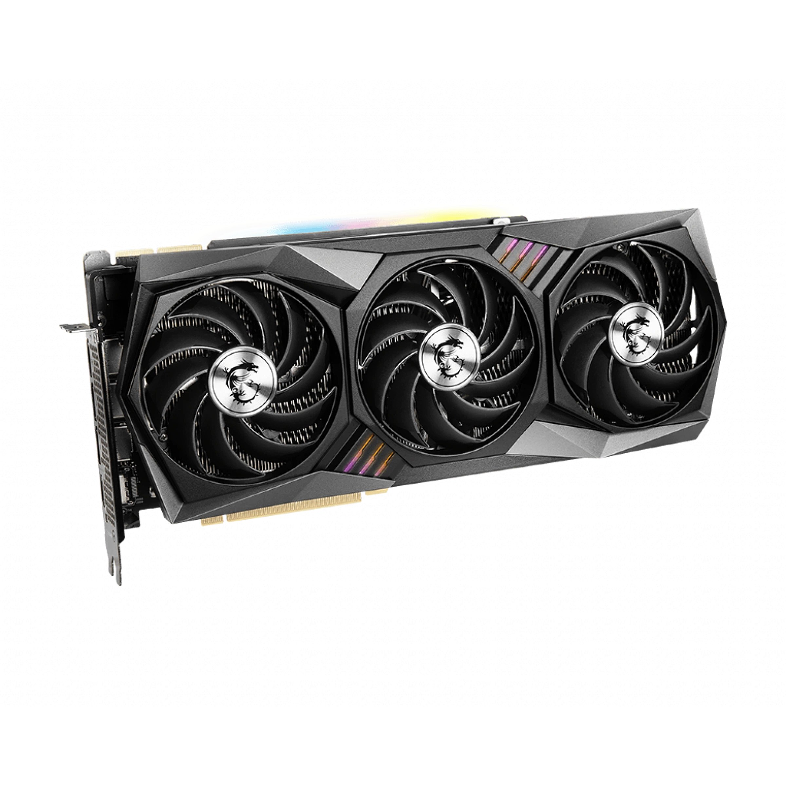
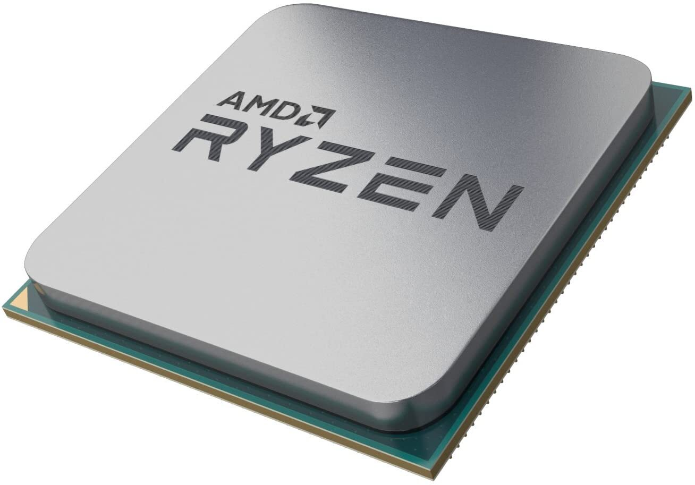
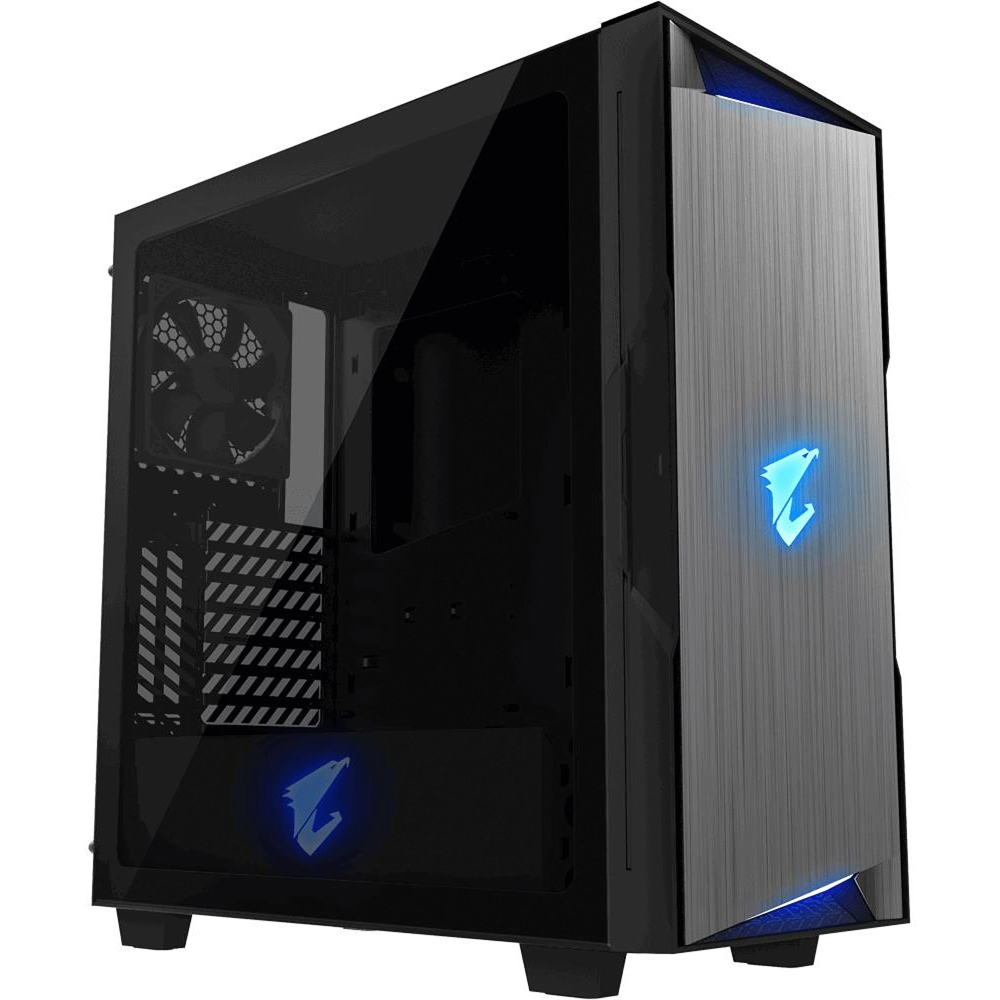

всем привет!
это мой первый сайт
здесь я раскажу как выбрать игровой пк

При выборе игрового компьютера нужно поставить перед собой вопросы:
– Для каких целей я его беру? В какие игры планирую играть?
– Какой бюджет я могу заложить на его покупку?
– В каком разрешении экрана я буду играть?
Если вы собираетесь играть в нетребовательные игры, вроде Overwatch, Rainbow Six Siege или Fortnite вам не потребуется мощный компьютер, даже на самых максимальных настройках. А вот в новых играх, таких как Cyberpunk 2077, Metro Exodus или Call of Duty Modern Warfare понадобится мощная сборка. Для игр нужна хорошая видеокарта. Чуть ниже, вы увидите таблицу с показателями FPS в различных играх и видеокартах и поймете, насколько мощная видеокарта вам нужна. Если же вы хотите компьютер для потоковой передачи или работы, пригодится мощный процессор и большой объем оперативной памяти.
Видеокарта
Видеокарта – самый важный компонент в игровом компьютере. Она в большей степени влияет на то, сколько кадров в секунду (FPS) выдаст ваш ПК. А сколько кадров нужно? Чем больше тем лучше, тем плавнее будет игровой процесс и вы увидите больше деталей. Минимальным необходимым для комфортного гейминга является 60 FPS. Однако FPS упирается в частоту обновления монитора. Если частота равна 60 Гц, а ваша видеокарта выдает в игре 200 FPS, то увидите вы все равно только 60. Поэтому чтобы получить на мониторе FPS, более чем 60, нужно приобрести монитор с частотой обновления в 120, 144, 165 Гц или больше. При выборе игрового ПК стоит обратить внимание и на разрешение монитора. Чем оно больше, тем мощнее должна быть видеокарта, чтобы получать приемлимый FPS. Для разрешения 1920×1080 (FHD) потребуется видеокарта от GTX 1650 до RTX 3060. Для 2560×1440 (2К, QHD) – RTX 3060 / RTX 3060 Ti и выше, а для 3840 × 2160 (4К) – RTX 3070 / RTX 3080 / RTX 3090. На данный момент лучшими игровыми видеокартами являются вышеперечисленные, от компании NVIDIA
Процессор
Вторым по важности компонентом является процессор. Это самый главный компонент для вычислительных задач, создания контента. Производительность процессора зависит от количества ядер, потоков и архитектуры. С каждым поколением архитектура улучшается, поэтому нужно покупать игровой ПК с процессором последнего поколения. Линейка процессоров Intel Core 10-го поколения начинается с модели Core i3-10100F с 4-мя ядрами и 8-мя потоками, и заканчивается процессором Core i9-10900K с 10-ю ядрами и 20-ю потоками. Процессора i3 может не хватать, а i9 будет излишним, обратите внимание на Core i5 и Core i7. Суффикс “K” в названии процессора означает, что он обладает разблокированным множителем и его можно разогнать. А суффикс “F”, что у него нет встроенного видеоядра, которое вам и не понадобится, ведь в игровом компьютере всегда есть дискретная видеокарта, а вы сэкономите. Поэтому имеет смысл выбирать ПК с таким процессором. Линейка процессоров AMD Ryzen 5000-ой серии начинается с модели Ryzen 5 5600X с 6-ю ядрами и 12-ю потоками, и заканчивается процессором Ryzen 9 5950X с 16-ю ядрами и 32-я потоками. Ryzen 9 излишен для игр, выбирайте Ryzen 5 и Ryzen 7. Процессоры Ryzen обладают высокой производительностью в многопоточных задачах. Суффикс “X” означает, что эта версия процессора немного быстрее той, что без “X”
Оперативная память
Самый современный тип оперативной памяти – DDR4, пришедщий на смену DDR3. Он работает на более высокой частоте – от 2400 МГц и выше. Современные процессоры Intel поддерживают частоту до 2666 МГц, а AMD до 3200 МГц. Поэтому оптимальная частота, если вы не собираетесь заниматься разгоном компьютера – 3200 МГц. Объем оперативной памяти, достаточный на текущий год – 16 ГБ. Если бюджет поджимает, то можно взять и 8 ГБ (а в будущем увеличить), но этого будет не хватать во многих современных играх, что приведет к фризам в играх.
Накопитель: SSD и HDD
В 2021 году любой компьютер, не только игровой, обязан иметь SSD-накопитель. Цена на них сейчас уже не велика, а польза очень существенна. Благодаря ему операционная система, программы, игры, файлы, находящиеся на твердотельном накопителе будут загружаться мгновенно. Минимальный объем для игрового компьютера – 240 – 256 ГБ, этого хватит для ОС, программ и нескольких крупных игр. SDD бывают двух форматов: SATA – самый распространенный формат с пределом скорости в 600 МБ/с. Стоит гораздо дешевле, чем SSD типа M.2. M.2 – более современный формат, при котором SSD-накопитель вставляется в разъем на материнской плате и занимает меньше места. Стоит дороже, чем SATA-SSD. Скорость достигает 7000 МБ/с. Оптимальным вариантом является установка связки SSD + HDD. На первом будет система, программы и игры, а на HDD расположатся игры, не требовательные к накопителю, документы, изображения, видео и аудио.
Блок питания, охлаждение и корпус
Один из основных параметров блока питания – его энергоэффективность (КПД). Чем выше КПД, тем меньше тепла ему надо отводить и, соответственно, тем меньше ему потребуется охлаждения и блок питания будет работать тише. Существует программа сертификации 80 PLUS, согласно которой стандарту соответствуют блоки питания с энергоэффективностью не менее 80% при нагрузке в 20%, 50% и 100%. Есть несколько уровней сертификации: 80 Plus, 80 Plus Bronze, 80 Plus Silver, 80 Plus Gold, 80 Plus Platinum и 80 Plus Titanium. Чем выше уровень, тем выше энергоэффективность блока питания. Мощность блока питания также влияет на уровень шума. Чем больше запас мощности, тем меньше нагрузки он получает и тем меньше потребуется охлаждения. Вентилятор в таком случае будет работать тише, на низких оборотах. На уровень шума влияет и охлаждение. Чем больше вентиляторы по размеру, чем меньше оборотов они совершают и тем меньше шума. Запас в системе охлаждения позволит разогнать или обновить компьютер без ее замены. Охлаждение подбирается в зависимости от процессора, оно должно эффективно охлаждать его, даже при полной нагрузке. Корпус выбирается по внешнему виду и системе вентиляции. Чем лучше проходит воздушный поток, тем меньше нагружаются и шумят вентиляторы. Если хотие снизить уровень шума, выбирайте корпуса с шумопоглощением, например от компаний beQuiet! или Fractal Design.
 моя сборка пккак выбрать монитор